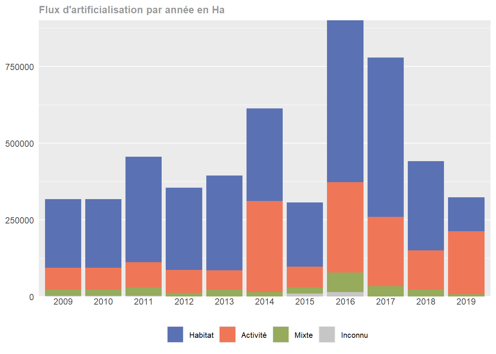

Chapitre 23 Couleurs Cerema
Nous aurions aussi pu choisir les couleurs de l’établissement.
Lisons la palette de couleurs Cerema :
library(rjson)
paletteCerema <- fromJSON(file = "palettes/palette_cerema.json")
paletteCerema$texte
[1] "#292574"
$principale
$principale$vert
[1] "#B0CC4E"
$principale$jaune
[1] "#FDEB7D"
$principale$orange
[1] "#F49D54"
$principale$bleu
[1] "#7E97CE"
$principale$vert2
[1] "#60B467"
$secondaire
$secondaire$vert
[1] "#96AB5B"
$secondaire$jaune
[1] "#F7D05C"
$secondaire$orange
[1] "#EF7757"
$secondaire$bleu
[1] "#5A71B4"
$secondaire$vert2
[1] "#448D60"
$complementaire
$complementaire$vert
[1] "#EBF1D4"
$complementaire$jaune
[1] "#FEFAE0"
$complementaire$orange
[1] "#FBE6D6"
$complementaire$bleu
[1] "#DEE5F1"
$complementaire$vert2
[1] "#D8ECDA"Elle est constituée d’une couleur pour le texte, pour les couleurs principales, secondaires et complémentaires.
Choisissons pour les couleurs des flux d’habitat, d’activité et mixtes des couleurs secondaires de la palette Cerema. Pour les données inconnues, on prend la couleur grise d’avant :
p + scale_fill_manual(
name = "Flux\nd'artificialisation\n2009-2020",
labels = c("Habitat", "Activité", "Mixte", "Inconnu"),
values = c(paletteCerema$secondaire$bleu,
paletteCerema$secondaire$orange,
paletteCerema$secondaire$vert,
colorGrey)
)
Dans ce notebook, ous allons représenter la donnée à l’aide d’un streamgraph.